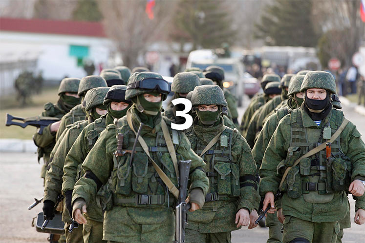

Как кинорежиссер стал жертвой борьбы с бандеровцами
ФСБ России уже десять месяцев расследует дело о «крымских террористах» — группе «Правого сектора», которая якобы планировала теракты в Крыму. Материалы дела засекречены, адвокаты дали подписку о неразглашении. Все это время четверо подозреваемых сидят в российских СИЗО. По версии следователей, организатором террористической группы был режиссер Олег Сенцов. Он всегда поддерживал единую Украину и сейчас считает свое дело политическим. В справедливый суд Сенцов не верит, говорит, что в СИЗО его пытали. В поддержку режиссера выступают в Каннах, освободить его просят Педро Альмодовар и Александр Сокуров, к обращению присоединился даже Никита Михалков.
Заголовок
Сторонники присоединения Крыма к России уверяют, что «вежливые люди» спасли полуостров от «Правого сектора». Никто не сомневается, что туда уже ехал поезд с «боевикам». Даже министр иностранных дел Сергей Лавров говорил, что в Крыму «заполыхало бы пламя».
«Террористов» четверо. Первого, Геннадия Афанасьева, уже приговорили к 7 годам колонии строгого режима. Он всегда был сторонником единой Украины, но после ареста сразу согласился получить российский паспорт. А в СИЗО признал свою вину.
Второй — Алексей Чирний — стал ключевым свидетелем обвинения. Он дал показания на всех фигурантов. По некоторым данным, Чирний заключил сделку со следствием, и теперь его дело будут рассматривать в особом порядке.

- 
А в 2011 Сенцов снял фильм «Гамер» — о подростке, который потерялся в мире компьютерных игр. Тема была ему близка: он и сам любил поиграть, даже открыл в Симферополе небольшой компьютерный клуб. На вырученные деньги и снимали «Гамера». Бюджет фильма — \$20 000. Все деньги пошли на организацию съемок, актеры работали бесплатно — это были обычные люди.
«Гамер» сразу стал популярным в Крыму — кинотеатры забивались битком. Потом фильм выиграл несколько наград в России и Украине, а Сенцов получил грант на новый фильм. Он уже все придумал и хотел снимать, когда в стране начался Майдан. Олег несколько раз ездил в Киев, стал активистом «Автомайдана» — фильм пришлось отложить.
С «Гамером» Сенцов пытался пробиться на международные фестивали. Получалось плохо, потому что никаких знакомств в этой среде у него не было. Сейчас его фильм показывают чуть ли не по всему миру, а в поддержку Сенцова выступают Педро Альмодовар и Вим Вендерс, Александр Сокуров и Кирилл Серебряников. На Каннском фестивале Сенцову посвящают стенды, на Московском — со сцены просят Путина освободить режиссера. К обращению присоединился даже Никита Михалков.